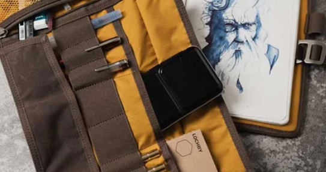

The sketchbook you actually open beats the perfect sketchbook still in its wrapper. Paper, size, and binding all change how often you draw — sometimes more than talent or technique. Here is how to choose one that fits your hand and your habits.

Size: bigger is not always better
A5 (5.8 × 8.3 in) and 5 × 8 in pads are the sweet spot for most beginners — large enough for gesture, small enough for a bag. A4 gives room for detail but rarely leaves the desk. Pocket sizes (A6 or smaller) are brilliant for daily one-line journals and café sketches if your handwriting-scale drawing suits them.
Buy one size and fill it before experimenting. You learn what you need from wear: curled corners mean you carry it; untouched pages mean it is too large or too precious.
Paper weight (gsm)
Weight is listed in gsm — grams per square metre. For graphite sketching:
- 90–110 gsm — student grade; fine for practice, may buckle if you press hard or use ink heavily
- 120–160 gsm — sturdy everyday sketch paper; handles erasing well
- 180 gsm+ — sketchbook paper that also tolerates light wash or marker
If you plan to add watercolour later, look for mixed-media or watercolour sketchbooks at 200 gsm or above.
Tooth and texture
Tooth is the microscopic texture of the surface. Rougher paper grabs graphite and creates grainy, expressive marks. Smoother paper suits fine detail and ink. Hold a sheet to the light and tilt it — a slight speckle means tooth; a flat even surface means smooth. Neither is wrong; match it to how you like to draw.
Binding types
- Spiral — lies flat; pages can fold behind; good for scanning individual sheets
- Stitched (signature) — opens reasonably flat; feels like a "real" book; pages stay put
- Hardbound — durable; heavier; often lies less flat unless you break the spine gently
- Softcover — light; bends in a pocket; cover may curl over time
White, cream, or toned paper?
Bright white gives maximum contrast with graphite. Cream or off-white is easier on the eyes for long sessions and suits ink. Toned grey or kraft lets you use white pencil for highlights — lovely once you are comfortable with values, optional for week one.
Signs you have outgrown a sketchbook
- You fight the paper — too slick, too rough, or tears when erasing
- You never carry it because it is the wrong size
- You avoid drawing on "nice" pages — paper should feel disposable enough to practice
A sketchbook is a conversation with yourself over time. Pick one that invites you in, not one that waits for a special occasion. The best page is the next empty one.